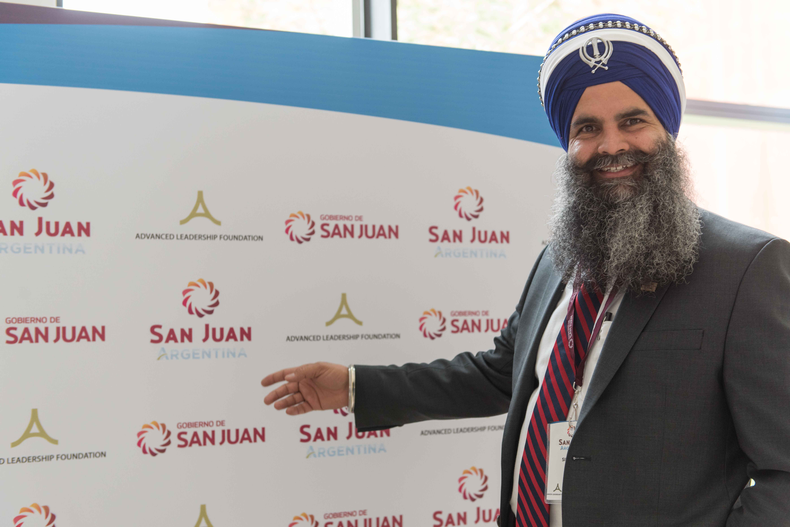
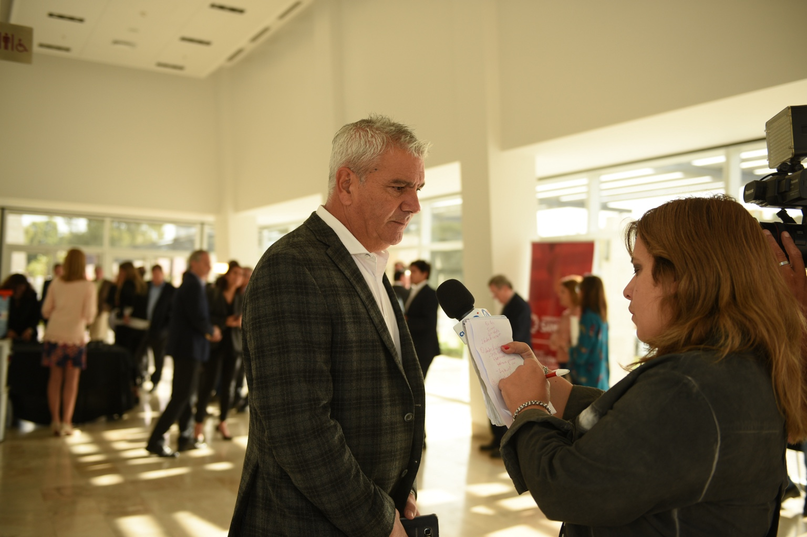
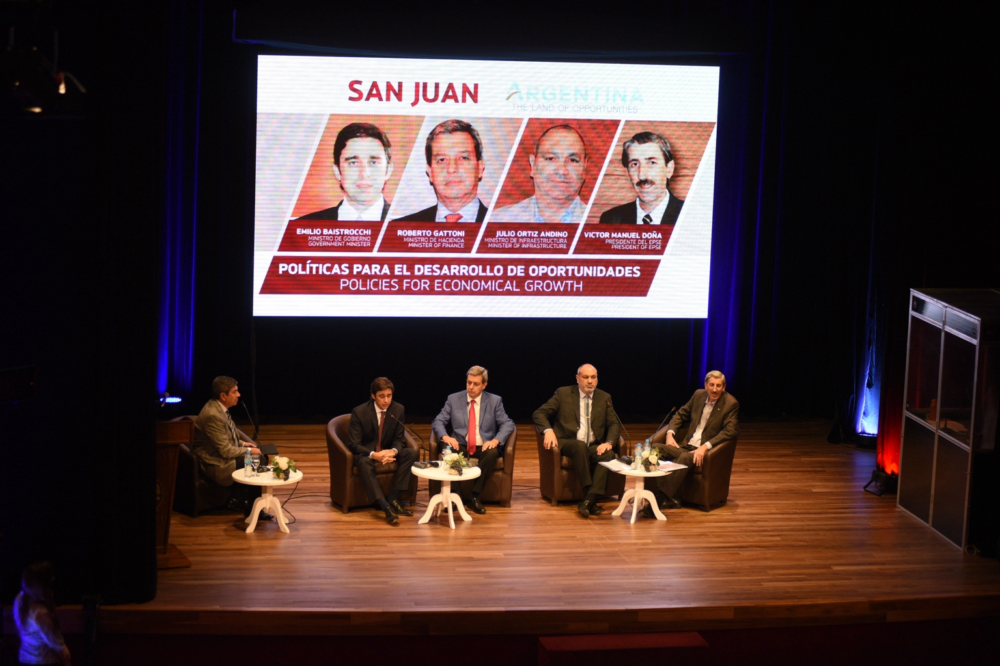
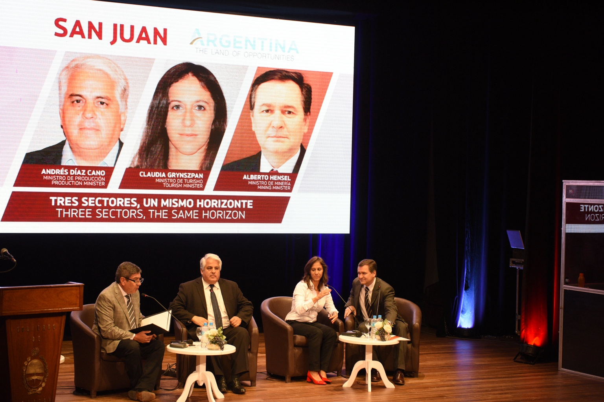
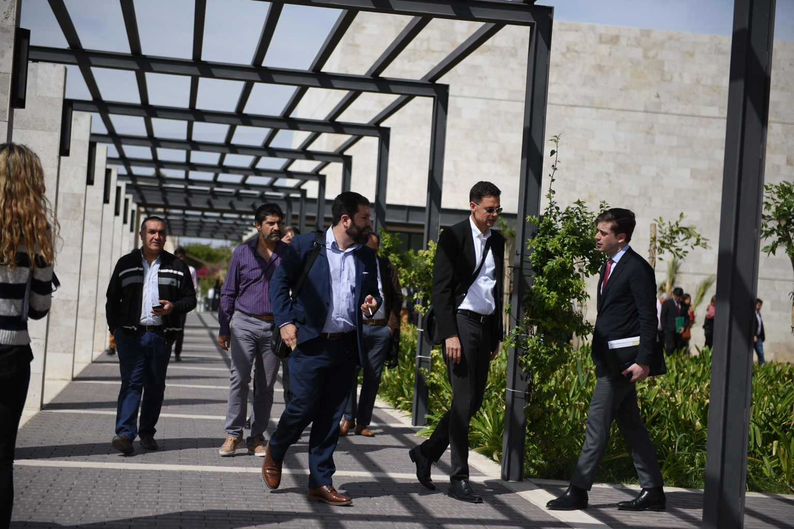
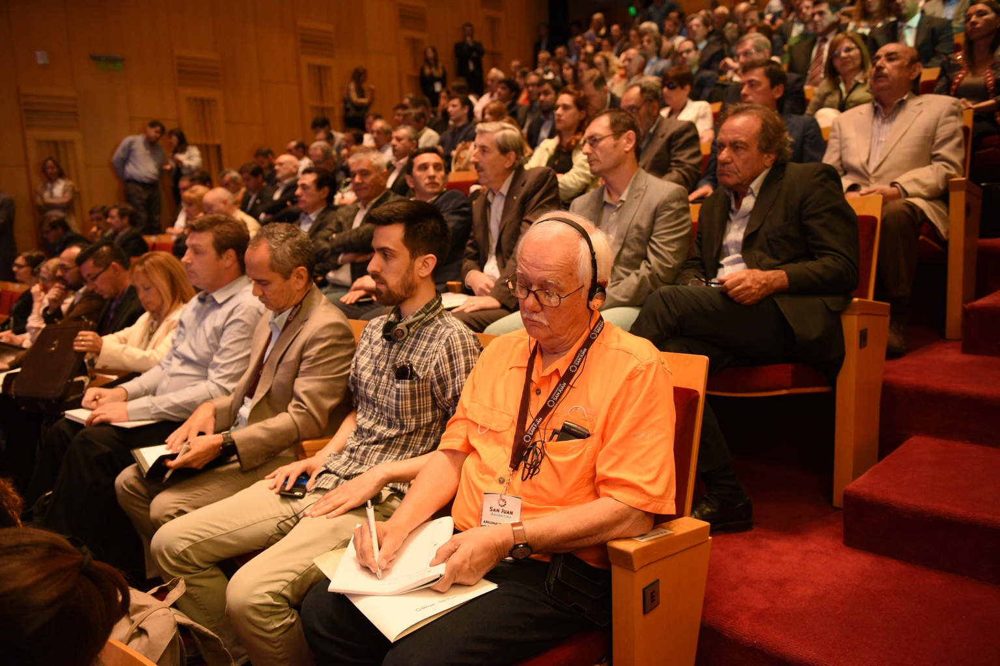
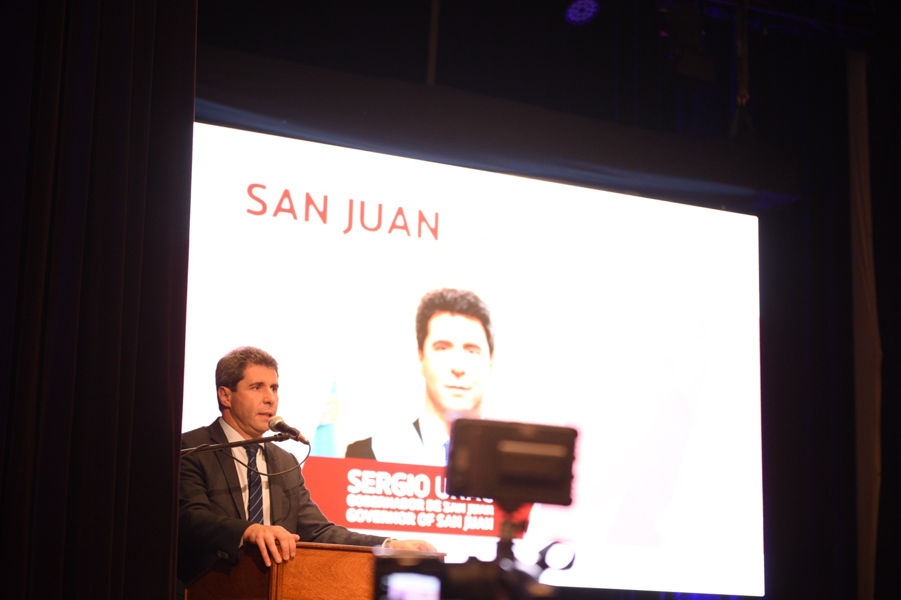
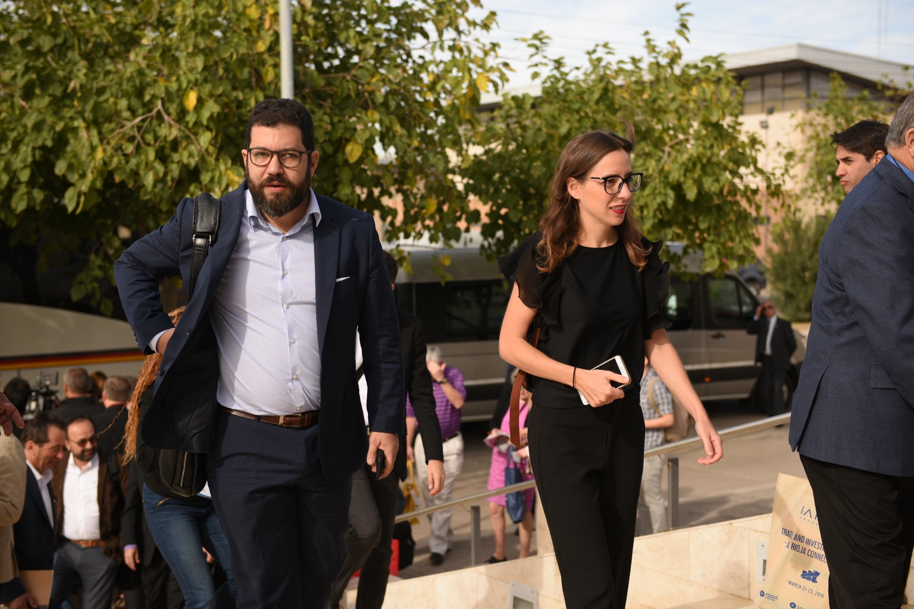
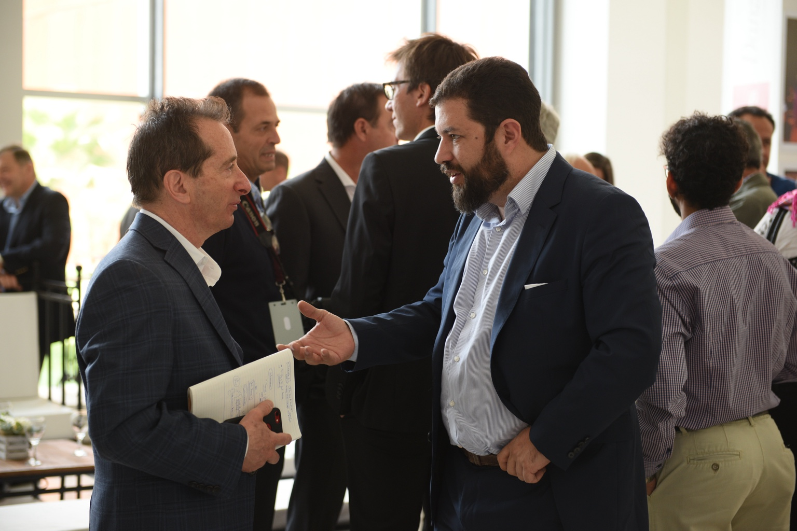
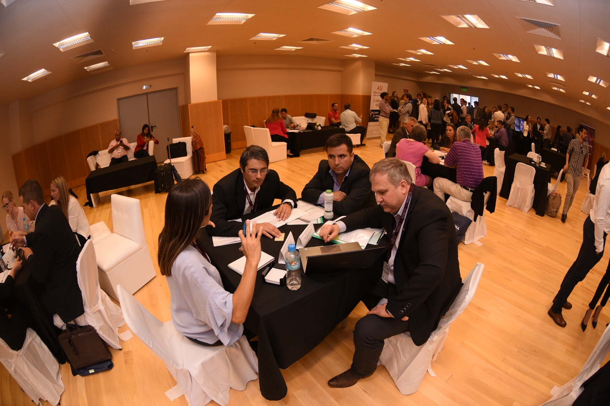

Overview
In 2018, the province of San Juan hosted one of ALF’s most emblematic certified trade missions, organized with the endorsement of the U.S. Department of Commerce. Designed to highlight San Juan’s strategic resources and industries, the mission attracted a high-level delegation of U.S. executives and investors.
Strategic Positioning
The mission presented San Juan as a province with world-class potential in mining, renewable energy, wine and infrastructure. It sought to reframe the province not only as a resource-based economy, but as a modern investment-ready hub where sustainability, technology and innovation could drive growth.
Outcomes & Legacy
- Concrete opportunities in mining and energy, including joint ventures, supply agreements and technology transfer.
- New channels for wine and agroindustry exports, opening access to U.S. distributors.
- Institutional alliances linking San Juan’s chambers and government agencies with U.S. organizations.
Why It Matters
For ALF, San Juan exemplifies how subnational trade diplomacy can generate international credibility and tangible outcomes. By bringing global investors to the province and aligning sector priorities with international demand, the mission transformed perceptions of San Juan at home and abroad.
San Juan Certified Trade Mission in Pictures
A visual record of institutional meetings, business matchmaking sessions, sector briefings and networking moments that shaped the mission.









